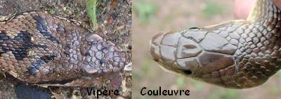
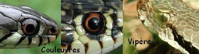

Une des différences principales est le type d’écailles que possède le serpent sur la tête. Les couleuvres possèdent de grandes écailles leur donnant un aspect "cuirassé", tandis que les vipères possèdent une multitude de petites écailles (certaines vipères peuvent toutefois présenter quelques écailles un peu plus grosses au sommet de la tête).
On peut facilement identifier la vipère ou la couleuvre grâce à leurs pupilles. Les vipères possèdent en effet une pupille en fente verticale (comme celle d'un chat), tandis que les couleuvres possèdent une pupille ronde ! C’est le meilleur moyen, infaillible, pour différencier une couleuvre d’une vipère en France.
La forme de la tête diffère selon les couleuvres et les vipères. Les premières possèdent généralement une tête ovale, mais celle-ci peut tendre vers une forme rejoignant le triangle, surtout à l'âge adulte. Les vipères, quant à elles, possèdent une tête plutôt triangulaire et aplatie. (Voir photos concernant l’écaillure des têtes des serpents). Cependant, je vous déconseille d’essayer d’identifier un serpent à l’aide de critère, mais celle-ci peut vous confirmer votre hypothèse.
En général, le corps de la vipère est trapu, contrairement à celui de la couleuvre, plus effilé et plus mince. De plus, les vipères sont petites, inférieures à 80 centimètres, tandis que certaines couleuvres peuvent atteindre, dans des cas records, 200 centimètres! Attention, la forme du corps est un critère qui reste assez subjectif et qui est soumis à forte variation suivant l'âge, le sexe et l'état général du serpent observé…Il doit être, comme pour la forme de la tête, un élément venant seulement appuyer la détermination faite à partir de l'écaillure, de la pupille voire de la livrée.